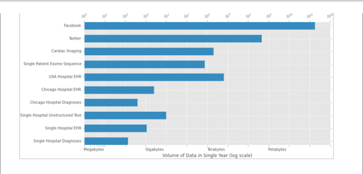

Let me just scale this figure down 3 times, then skew it 1.5 times

I won't lie, I don't find the process of submitting an academic manuscript or even the post-acceptance rigmarole to be pleasurable. However, the part of this process that most makes me want to put my head through the wall is the insistence of most journals on content being submitted in word documents and raster images.
This insistence is asinine.
Now let me be clear, I'm not stupid. I know that supporting additional input formats could make the process marginally more difficult or expensive for the journals to accommodate. But honestly, how much more could it reasonably cost to support pdf and vector images in the editorial process?
blah blah blah, why does this even matter?
I care about what my work looks like. While I am more than satisfied with the formatting on manuscript texts that academic journals provide, I am far less happy with the support for images and the typical insistence on rasterized images being provided. Why is this such a sticking point for me? Because raster images look like ass when they are altered from their original size (some more than others, but all to some degree.
The size that any arbitrary journal decides to publish your figure in is relatively arbitrary as far as I can tell, it may or may not be compressed or stretched and margins will differ between different journal templates. When I provide a vector image (in eps/ps/svg format for those interested) the graphic can be scaled to within reason and still look nice and crisp as I intended in a relatively small file size. While it won't be perfect (text may get too small or big if it's scaled down) at the very least it will always look at least good (in my mind at least) and, more importantly, crisp.
Raster images (png/jpg/tiff for the curious) provide none of that. Raster images are built for the size of the original canvas since they are a bitmap. To change the size in any way means either discarding pixel information or inferring it based on the color values of nearby, known cells in the pixel grid. This means that changing the size causes a loss in crispness, especially for text, and that your resulting image will end up looking like ass.
I say this because in my last paper I provided an eps image of the chart that I've set as the image of this post. It looks fine at most sizes as an eps, until it gets rather small and that's largely because it needs to be a rather large chart. But when the tiff file for it is resized, it ends up looking rather horrible. However, since this is such a large chart I need to know the dimensions that it will be published as in order for me to optimize the raster image, which I can't do until the proof stage. So now the process becomes:
- Submit placeholder image to journal
- Go through review process
- Get accepted proof, measure published image dimensions
- Resubmit altered raster image to published dimensions
All told, I think that process sucks for both me and the journal. Especially because the method for distribution is predominantly moving to the internet where none of these concerns even matter.